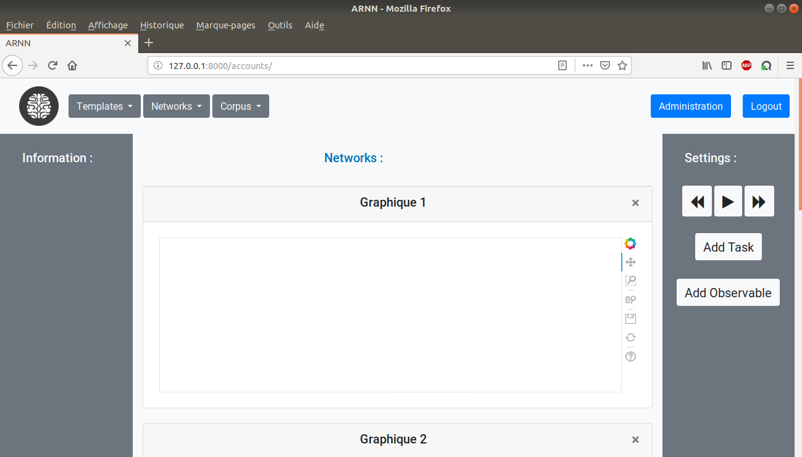
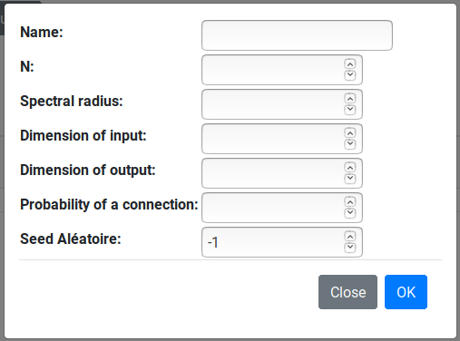
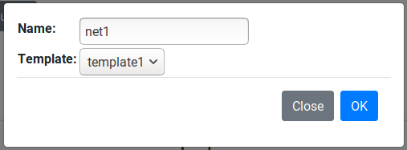
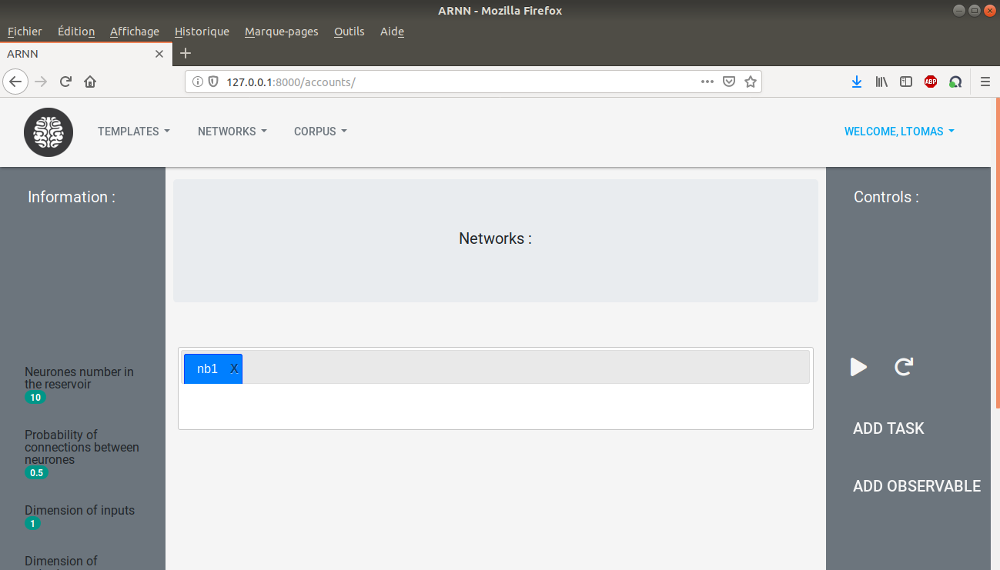
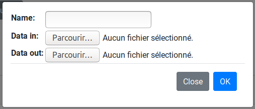
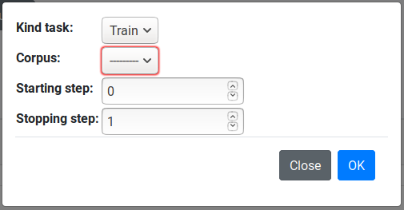
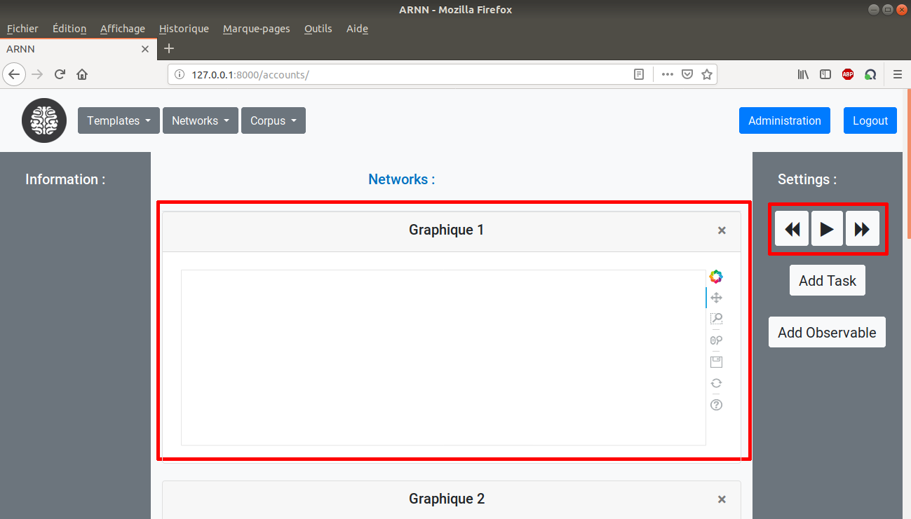
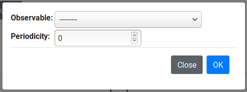

Once the user is authenticated, the network page is automatically loaded.
Some features are noticeable. First of all, if the button at the top right corner is pressed, some options are displayed.
The homepage can be accessed by clicking on the brain picture at the top left.
If the web browser window is closed, then the current cookies are not cleared so that the user is still logged in. As a consequence the network page can be accessed again by clicking on Networks in the homepage, see the User Guide.
The administration system is reachable by clicking on Administration, however you have to be logged in as a superuser to access the page, see Administration chapter for more details. If a user clicks on despite non-superuser privileges, then the administration login page with an error message is displayed.
The user can close and reopen the GUI windows if they are judged annoying.
This part develop the way to concretely use the application.
A user with session cookies has to create a template at first by clicking on Templates then New Template. A window pops up.
Input N is the number of neurons within the tank, the spectral radius is about the matrix of the connection weigths and the probability of a connection concerns the tank neurons. The weight matrix is generated from the seed so that the user can chose to obtain the same one multiple times. It is set by default to -1 by default which means the Python clock is used to produce the matrix, therefore it is supposed to be random.
Some self-explanatory options are available in the template scroll bar, the manage tab allows a logged-in user to delete the templates.
Once the session includes at least one template, the user can create a network by clicking on Networks then New Network.
The selected template will be the network’s basis. The networks can be loaded by clicking on Networks then manage. The networks of the session are displayed and the load option can be seen. When it is pressed, the selected network appears at the core with its characteristic in the Information block at the left.
Afterward a corpus can be generated, by clicking on Corpus then New Corpus, from two different loaded files, the two matrix relevant to the input and the ouput. Yet, note that the corpus dimensions have to fit the selected dimensions of the network template. Some self-explanatory options are again available on the network and corpus scroll bars.
When all of this is complete, the current network can be run under several otpions, click on Add Task from Settings on the right side.
Either test or training mode can be launched with the corpus whose data is loaded. The steps will be described in the Network Control section.
Once a task is assigned to the network, the network control functionalities (highlighted in red color in the image below) are available.
The graphic windows at the core is generate by Bokeh, which includes somes options their website features in the Useful links, which can also be opened up by clicking on the Bokeh logo on the toolbar. On the settings area, the left and right arows are linked to the steps defined by the tasks and their meanings can easily be guessed.
The plotted graphs correspond to the data of the current network whose the selection can be carried out by clicking on Add Observable.
The data to be displayed can be chosen and the periodicity of the plot has to be specified. As several graphs may be needed to be displayed, some graphic windows are available to the user.
« Register :: Contents :: Administration »